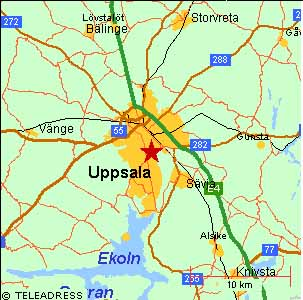
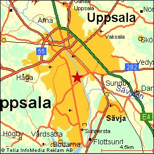
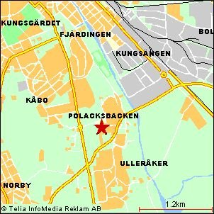
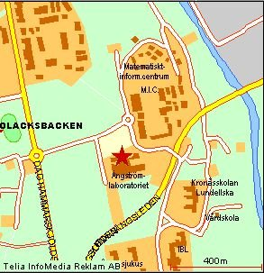
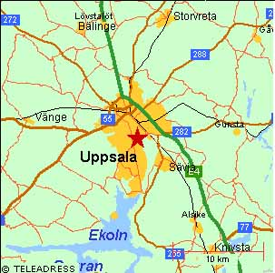
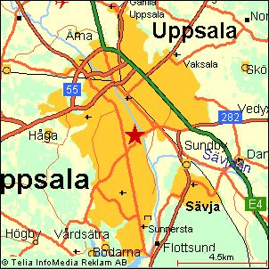
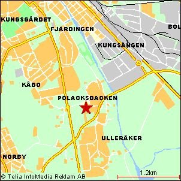
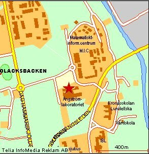

www.gulasidorna.se har en utmärkt webbtjänst. Gör man en kartsökning på Ångströmlaboratoriet, Uppsala med den så kan man långsamt zooma in till det område där Ångströmlaboratoriet ligger:








Söderifrån längs E4:an
Vid rondellen in till Uppsala lämnar du E4:an genom att ta till vänster, in mot Uppsala. Fortsätt sedan längs denna väg (Kungsängsleden) i 4 km under järnvägen och rakt fram över Fyrisån, tills du nått upp till den stora korsningen med Dag Hammarskjölds väg. Sväng höger där in mot Uppsala och fortsätt 700 m till en liten rondell. Ta höger i den in på Regementsvägen. Nu ser du gamla regementet (numera Matematiskt-informationsvetenskapligt centrum) framför dig. Efter ett par hundra meter ser du det stora imponerande Ångströmlaboratoriet till höger om dig. Där hålls kongressen.
Norrifrån längs E4:an
Fortsätt till rondellen söder om Uppsala och ta höger i den in på Kungsängsleden, och följ därefter beskrivningen ovan.
Västerifrån åker du snabbast in i Uppsala, och det är för komplicerat att beskriva enkelt så du lämnas att hitta vägen med hjälp av karta.
Österifrån... Mats Linder hittar säkert själv, eller kan använda beskrivningen ovan.
Stig av vid Uppsala Centralstation. Gå rakt fram över Centralplan, korsa Kungsgatan och gå Bangårdsgatan fram till korsningen med Dragarbrunnsgatan. Ta till höger där och gå ett par hundra meter fram dit där de gröna stadsbussarna står. Följ sedan anvisningarna under Buss nedan.
Alla bussar från centrum som passerar Ångströmlaboratoriet går från Dragarbrunnsgatan i riktning mot Graneberg. (Viktigt! ta den inte i fel riktning, för då kommer du inte till kongressen!)
Fredag
05.20-18.36 - Buss 20 eller 25
19.00-00.30 - Buss 50
Lördag och söndag
05.30-00.30 Buss 50